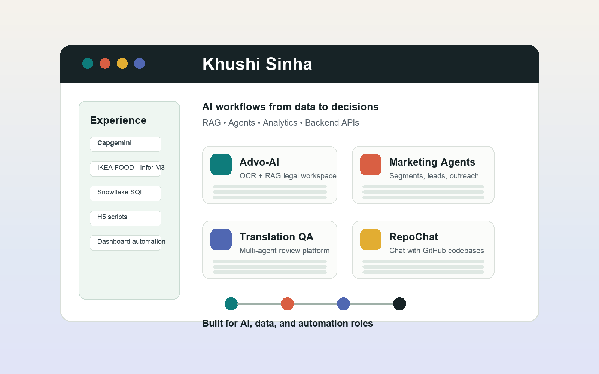

Data Analyst + GenAI Developer
Khushi Sinha
I build AI workflows that turn data, documents, and business questions into decisions: RAG systems, agentic analytics, text-to-SQL tools, and backend AI platforms.
LLM Apps
Data Storytelling
Backend Systems
RAG Workflows

RAG Systems
Agentic AI
FastAPI
Snowflake SQL
Power BI
Vector Search
Streamlit
Docker
Creative Layer
AI Portfolio Command Center
A recruiter can read this page like a product demo: business operations, data analytics, AI engineering, and backend thinking connected into one story.
> match_role("Data Analyst + GenAI Developer")
> strengths: SQL, FastAPI, RAG, Agentic AI, Power BI
> recruiter_signal: creative_builder_with_business_context
Current Role
Associate Data Analyst at Capgemini
IKEA FOOD - Infor M3
I manage ERP functional operations, client goods data, documentation workflows, data accuracy, and compliance-related processes. I also improve workflows using H5 scripts, widget customization, and optimized Snowflake SQL for dashboard automation.
- Resolved high-volume business-user queries across ERP workflows and documentation.
- Reduced repetitive ERP steps through H5 scripting and widget customization.
- Supported dashboard logic and reporting through Snowflake SQL queries.
- Collaborated with development teams using Java Core, AngularJS, and JavaScript.
Timeline
From Enterprise Operations To Applied AI
Selected Work
Projects Built For AI, Data, and Automation Roles
Skills
Tools I Use To Build
Proof
What This Portfolio Shows
Business Context
ERP support, customer operations, documentation, SLA ownership, and stakeholder communication.
Data Execution
SQL, Snowflake, Power BI, ETL thinking, dashboard logic, validation, and analytics workflows.
AI Product Building
RAG, agents, FastAPI, vector databases, LLM provider patterns, OCR, and production-style testing.
Application Answers